Instances of clause subordination were seen in chapter 3 as modifiers and complements within phrases. Chapter 5 will cover options for clause-within-clause subordination. In this chapter, section 4.2 gives annotation to distinguish matrix clause types. Section 4.3 presents the analysis of function for phrase components of a clause. Finally, section 4.4 introduces clause internal coordination with CONJP (conjunction phrase) and ILYR (clause internal) layers.
A clause is a matrix clause when it is not subordinate, that is, when it is not contained within a higher phrase or clause. The internal form of a matrix clause can determine its use, and this gives rise to a basis for distinguishing the different matrix clause types of:
| IP-MAT | matrix clause |
A basic matrix clause with the tag of Table 4.1 is a declarative clause. A basic matrix clause requires a finite verb. For example, (4.1) has past tense lexical verb cried as the only verb of the clause.
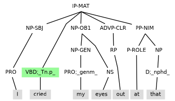
Modal verbs only have finite forms. The short form 'll of WILL occurs as the finite verb of (4.2), with cry as a following infinitive lexical verb placed under an IP-INF-CAT layer that extends the matrix clause structure and matches the catentative code of the modal verb.
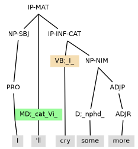
A finite DO can also occur with an infinitive lexical verb, as in (4.3), with did as past tense and emphasising kiss. Note how there is no verb code with this emphatic use of DO and how DO and the infinitive verb share the same layer of clause structure.
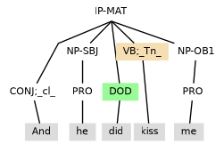
Basic declarative clauses have positive polarity. The polarity of a matrix clause is inverted by adding negation, either as the full form not (e.g., (4.4)) or the contracted n't (e.g., (4.5) and (4.6)). Both forms need a preceding (immediately preceding when there is contraction) finite verb that is either: a modal verb, BE, HAVE or DO.
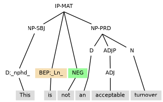
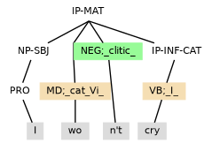
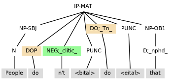
| CP-QUE-MAT | top layer of matrix interrogative clause |
| IP-SUB | finite clause complement of CP |
Annotation for a matrix interrogative clause involves an IP-SUB clause layer that:
A matrix interrogative is formed as either:
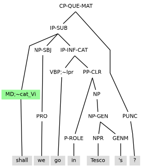
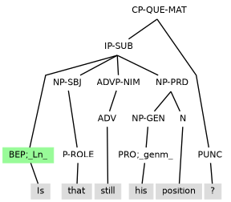
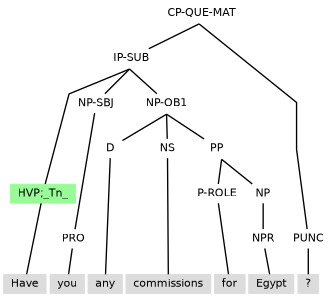
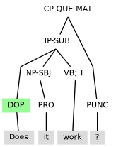
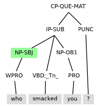
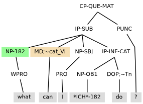
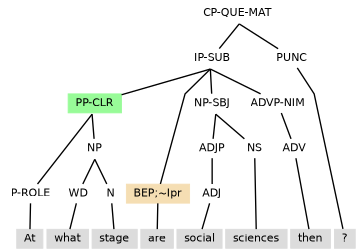
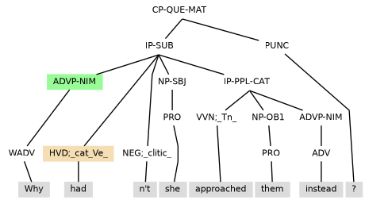
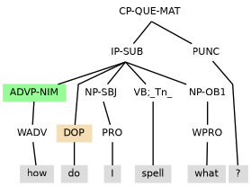
| IP-IMP | imperative clause |
An imperative clause requires a verb in the imperative form. The imperative form is a finite form of the verb that is typically equivalent to the infinitive form, and so the verb is tagged in the same way as an infinitive, as (4.16) illustrates.
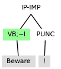
To search for imperative verbs, it is appearance under an IP-IMP layer that can be used to distinguish a verb as having imperative form.
Another property marking the imperative clause as a distinct matrix clause type is the exceptional absence of a subject constituent. Presence of a noun phrase with vocative function (NP-VOC) is one way open for the construction to have a referenced ‘be-er’, ‘have-er’ or ‘do-er’ for the verb, as in (4.17) and (4.18).
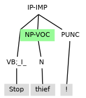
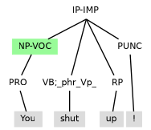
Presence of either an imperative verb or a subject together with a finite verb warrants marking the enclosing structure as a clause (IP). When there is not enough material in an utterance for an IP, the utterance is marked as a sentence fragment with the tag of Table 4.4.
| FRAG | sentence fragment |
Examples (4.19)–(4.22) are illustrative of possible FRAG utterances.
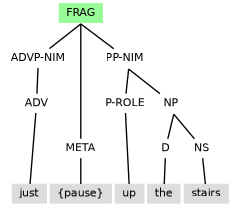
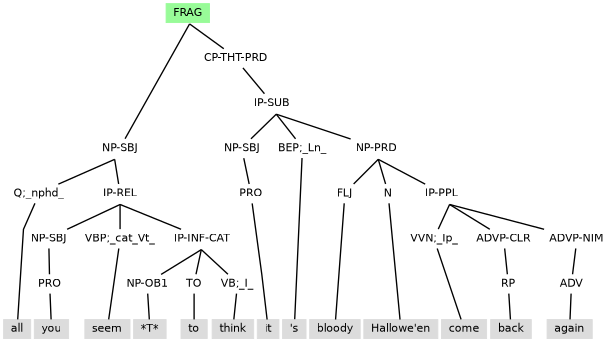
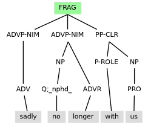
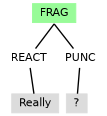
Besides clause level words (notably verbs, but also negation, adverbial particles and existential there), phrases may occur as components of annotated clause structure. To occur at the clause level, a phrase component requires a tag with an extension for a clause level function. Available clause level functions are:
| -SBJ | subject |
| -ESBJ | subject of a clause with existential there |
| -NSBJ | notional subject |
A subject is always required in a basic clause. The subject is typically the noun phrase corresponding to the ‘be-er’, ‘have-er’ or ‘do-er’ of the verb. The subject can determine the form of the first verb instance of the clause (e.g. I am, he/she/it is, we/you (all)/they are). Also, with regards to form, pronoun subject forms I/we/he/she/they contrast with non-subject forms me/us/him/her/them.
Subjects typically occur with a clause initial position. For a couple of untypical clause types, the subject can appear after an initial verb. This holds especially for interrogatives, as in examples of section 4.2.2 above. Inversion of the subject and an initial verb can also occur after a frontmost adverbial phrase with a (semi-)negative adverbial head such as hardly, scarcely, little, never, seldom, rarely), as in (4.23).
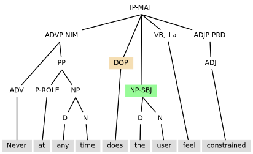
Inversion of the subject with a modal verb or finite form of BE, HAVE, or DO also happens with and so reduced clauses:
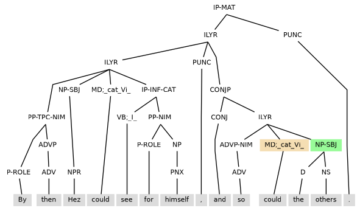
Also, the subject occurs after the verb in clauses with existential there.
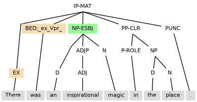
In the annotation, -SBJ is the basic tag extension for marking a subject. Other more specialised markings in table 4.5 relate to the subject function in particular constructions:
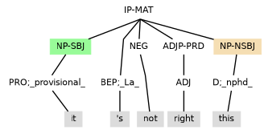
The subject can also be it as a dummy element tagged PRO;_expletive_ which has nothing else to relate to in the clause and essentially fills the role of licensing a contentless subject, as in (4.27).
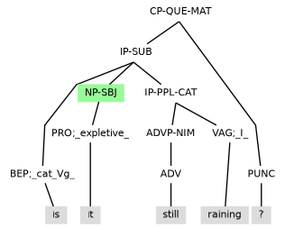
An object can only occur when there is a transitive verb. The following properties are typical:
There are two types of objects:
| -OB1 | direct object |
| -DOB1 | derived object |
| -NOB1 | notional direct object |
A direct object generally follows immediately after its transitive verb, except where an indirect object intervenes. In the annotation, -OB1 is the basic tag extension for marking a direct object. Other more specialised markings seen in table 4.6 relate to the direct object function in particular constructions:
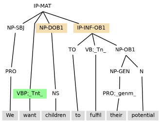
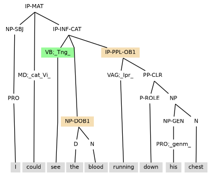
| -OB2 | indirect object |
An indirect object occurs after ditransitive verbs such as GIVE and TELL, and comes before the direct object. It conforms to the other criteria for objects, including the formation of passives.
While rare, it is possible for the indirect object to be the only object present in the clause, as in (4.30).
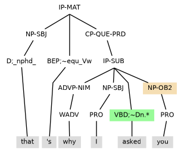
The indirect object function can also occur with preposition phrases that are selected by verbs with codes [Dn.pr] (see section 7.7.2), [Dpr.f] (see section 7.7.4) or [Dpr.w] (see section 7.7.6).
| -PRD | predicative |
A predicative can only occur as a clause element when selected by the verb. A predicative typically follows the verb and (if one is present) the direct object. Noun phrases and adjective phrases are able to function as predicatives. This behaviour is in contrast to objects, which cannot be adjective phrases.
There are two types of predicative: the subject predicative and the object predicative. In the annotation, both types of predicative are tagged -PRD. They have the semantic role of characterising a preceding noun phrase:
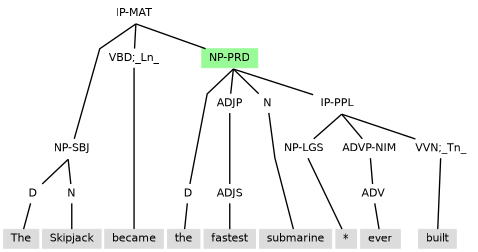
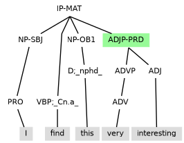
An adverbial is a phrase that is used to modify a verb or clause. Adverbials need to be marked in the annotation with one of either the two tag extensions in Table 4.9.
| -CLR | closely related, obligatory function |
| -NIM | not important, non-obligatory adverbial function |
It is typical for adverb phrases to be used as adverbials, but also noun phrases and preposition phrases can be used in this way. In (4.33), the topicalised preposition phrase for a time, the adverb phrase still, the noun phrases a couple of afternoons and supply teaching, and the clause final preposition phrase at Perins, are all unselected adverbials marked -NIM that modify worked.
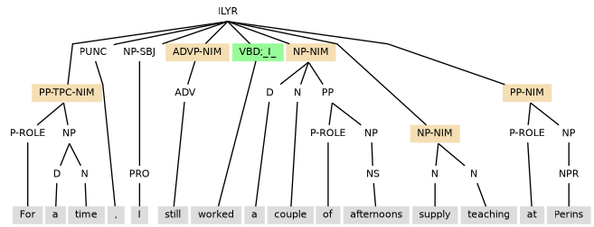
On a verb specific basis, adverbials may have clause presence as required elements. Such adverbials express a particular semantic relation that the verb selects. To capture this connection between the selected adverbial and the selecting verb, the adverbial is marked -CLR, and:
Even when not selected by the verb, and so marked -NIM, adverbials still need to make a meaning contribution that is compatible with the meaning of the verb.
| CONJP | conjunction phrase |
| ILYR | clause internal layer |
Coordination joins together two or more constituents which are outside of each other and of ‘equal status’. For example, content for three clauses become one clause through coordination in (4.34).
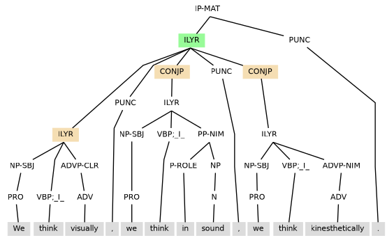
The overall coordinated structure of (4.34) is gathered under a single ILYR (clause internal layer) projection. Each conjunct of the coordinated structure is an ILYR that is either:
Coordination can occur at different levels of clause structure. In (4.35), front placement of is to mark the clause as interrogative happens with both conjuncts for coordination at the highest level of clause structure.
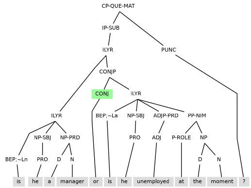
In (4.36), the coordination is within the syntactic scope of the subject.
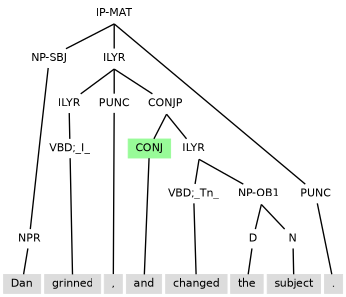
Example (4.37) shows coordination within the clause at two distinct levels: just under the syntactic scope of the overall subject, and under the syntactic scope of an object.
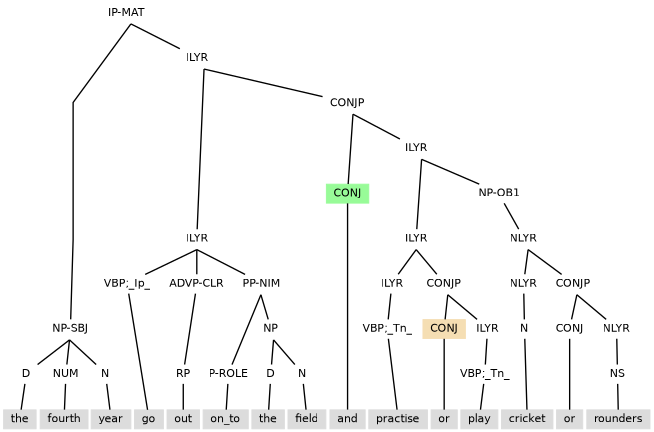